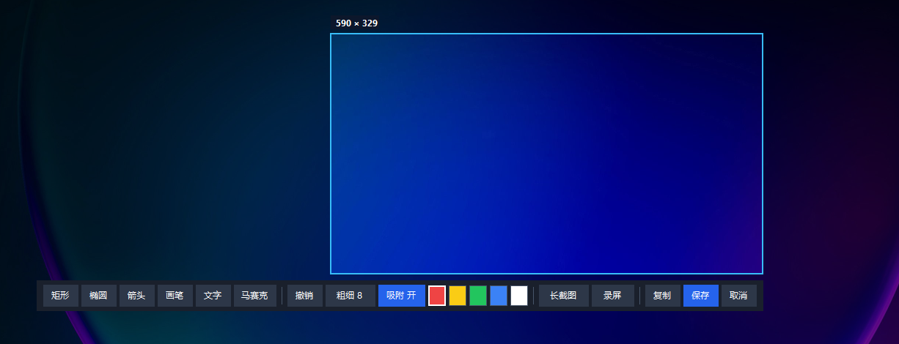

想截哪里，就截哪里
智能识别窗口，也支持自由框选、多显示器和快捷全屏。边缘与八个手柄让微调更准确。
框选、标注、长截图与录屏，一次完成。轻截常驻系统托盘，需要时一键唤醒，不打断你的工作节奏。
专注每一次捕捉
智能识别窗口，也支持自由框选、多显示器和快捷全屏。边缘与八个手柄让微调更准确。
文字、箭头、画笔、形状与马赛克都是可编辑对象，支持多选、吸附、旋转和缩放。
滚动采集长页面；录屏时继续添加批注，并可显示鼠标点击提示。
长截图与录屏按模块加载。模块可以热替换或移除，基础截图流程始终保持轻快。
真实画面，不只是功能列表

第一步 · 精准框选
窗口识别、自由框选与八手柄微调都在屏幕上完成。工具栏紧贴选区，截图、长图和录屏不必来回切换应用。
和 Windows 自带截图有什么不同
只需要偶尔截一张？Win + Shift + S 已经很方便。需要把截图做成说明图、长页面或演示视频时，轻截把捕捉和编辑留在同一条工作流里。
画笔、形状和裁剪，适合快速标一下就分享。
多选、移动、八手柄缩放、旋转、吸附和文字二次编辑，不必画错后重来。
更适合当前屏幕里看得见的单张画面。
向上或向下采集并自动拼接，完成后仍可添加文字、形状、马赛克和贴图。
快速录制区域与声音，适合直接保存分享。
边操作边添加和编辑标注，可显示点击提示，并让录制范围线不进入最终视频。
系统内置、零安装，这是它最直接的优势。
长截图和录屏可以启用、禁用、永久删除或独立下载，基础截图保持轻巧。
四种组合覆盖“是否自带运行库”和“是否预装全部插件”；按电脑环境与需要直接选择。
正在连接 GitHub Releases…
尚未安装 .NET 8 Desktop Runtime？前往微软官网下载下载适合当前 .NET 环境和插件需求的 ZIP
解压到任意可写目录
启动ScreenshotTool.exe